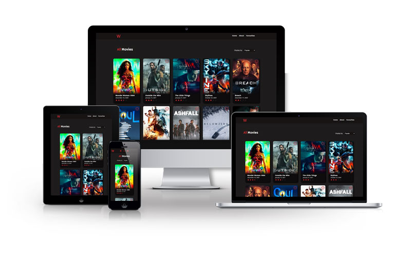

Watcher
ReactJS Web Application
6 Weeks
Adobe Photoshop, ReactJS, SASS, GitHub
Watcher is a movie listing web application that lets users browse and keep track of the movies they love, featuring a sleek UI for quick at-a-glance information and the ability to browse by popularity, ratings, currently playing, and upcoming. It utilizes The Movie Database API to display user ratings, release date, and plot summaries.
Team: Matt Hildebrand, Skye Yang
Role: UI Designer and Developer, Debugger
Process
Planning
Our approach going into this project was divided by roles, which overlapped whenever more assistance was needed for any specific tasks. For this project, I handled the UI design and development, as well as some asset creation and debugging. I also put together the app structure to be output in JSX.
The mockups were created mobile-first, followed by desktop versions with the following requirements in mind:
- Four pages: Home, About, individual movie, Favourites
- Browse by: Popular, Top Rated, Now Playing, Upcoming
- A button or UI element that allows users to 'favourite' movies
- Responsive between 320px to 1980px.
I approached the design with a mind of keeping the interface clean and uncluttered, opting to display only the movie poster, title, release date, and rating for each movie on the home and favourites pages. Hovering over each poster with a cursor on desktop or pressing the movie poster on mobile would display an excerpt from the summary of the movie, with a "more info" button that takes the user to a page that displays more of the movie's information.
{kind=link}
{kind=link}
{kind=link}
Click images to enlarge.
The mockups were created with Photoshop and make use of folder groups to show UI changes with various user interactions.
Development
With the mockups complete, my teammate and I divided the workload and began work on the development of the app itself.
I started off with setting up the app structure, then turned them over to my teammate once I'd finished with them. From here on, I worked on styling the app's UI while my teammate worked on pulling in the data dynamically. This was decided with the thought that it would reduce the chances of code conflicts happening.
The final product differed a little from my mockups, as small changes were made to improve usability during the development process.
Challenges and Takeaways
This was a project where communication was critical and contributed greatly to the successful development of our app. While I had done my best to set up the app structure properly from the start, there were a few times where I had to go back and edit a div or a class. Due to the ongoing Covid-19 pandemic, we could not work together in person. Instead, we set up online meetings to communicate through, giving a heads up whenever there was a need to change the code on what the other was working on.
There were also some differences between the mockups and the final product. These changes were made during the development process, when usability issues came up and needed to be resolved. For instance:
The button to add a movie to favourites was only accessible when hovering the cursor over the poster. This was changed to be accessible without having to hover so keyboard and mobile users can access it easily. A link to the individual movie pages was also added to the movie titles upon realizing not all users would know to hover or press on the movie poster for more information.
Takeaways
The key takeaway from this project is to keep communication as a top priority- I'm certain it would not have gone as smoothly if we hadn't taken the extra steps to make sure we always knew what we were working on.
Being quick to come up with solutions and ready to make changes to code after user testing is also still very important; even if revisions to mockups were made and approval was solid, what looks good visually isn't necessarily the best functionally.